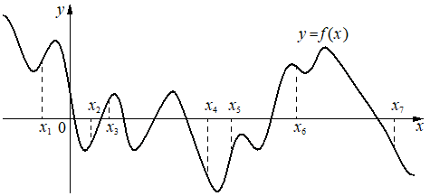

Авторский разбор и аудит предварительны; внешней экспертизы нет.
Модель автора: claude-opus-5-5 (opus; effort=low); в основных частотах: True ·
Впишите правильный ответ.
На рисунке изображён график функции На оси абсцисс отмечено семь точек: Найдите количество отмеченных точек, в которых производная функции положительна.

КЭС: 4.2 Применение производной к исследованию функций на монотонность и экстремумы. Нахождение наибольшего и наименьшего значения функции на отрезке
3
| ID / вход | Действие | Результат | Локальные KC |
|---|---|---|---|
| s1 · condition | По графику определить характер монотонности функции в каждой отмеченной точке (возрастает, убывает или точка экстремума) | x1 — точка минимума; x2, x3, x5 — на участках возрастания; x4 — около точки минимума/на убывании; x6, x7 — на участках убывания | kc1 |
| s2 · s1 | Связать знак производной с монотонностью: f'(x)>0 там, где функция возрастает, и подсчитать такие точки | f'>0 в точках x2, x3, x5; количество 3 | kc2 |
[
{
"id": "m1",
"name": "Знак производной через монотонность по графику функции",
"step_ids": [
"s1",
"s2"
]
}
]Вход: график функции и точка на оси абсцисс. Операция: установить, лежит ли точка на участке возрастания, убывания или в точке экстремума. Граница: только визуальное чтение графика.
{
"local_kc_id": "kc1",
"status": "new_candidate",
"catalog_kc_id": null,
"evidence": [
{
"ref": "step:s1:action",
"quote": "По графику определить характер монотонности функции в каждой отмеченной точке"
},
{
"ref": "image:assets/c1b4cd62c40f42af682dc6cd.png",
"region_description": "График y=f(x) с семью пунктирными отметками x1..x7 на оси абсцисс; в каждой отметке нужно определить, поднимается или опускается кривая"
}
],
"context_refs": [
"condition",
"image:assets/c1b4cd62c40f42af682dc6cd.png"
],
"alternatives_checked": [
{
"catalog_kc_id": "graph_coordinates",
"reason": "Считывание координат точек, а не направления изменения функции"
},
{
"catalog_kc_id": "literal_9aee0783618d",
"reason": "Чтение знака по графику производной, здесь дан график самой функции"
},
{
"catalog_kc_id": "derivative_monotonicity",
"reason": "Вывод монотонности из знака производной, а не визуальное чтение графика функции"
}
],
"rationale": "Операция: визуально определить возрастание/убывание/экстремум графика функции в заданной точке. В каталоге нет узла чтения монотонности по графику самой функции.",
"proposal": {
"name": "Определять по графику функции возрастание/убывание в заданной точке",
"definition": "По графику y=f(x) установить, лежит ли отмеченная абсцисса на участке возрастания, убывания или в точке экстремума; без вычисления производной."
},
"blocking": false,
"issue_ids": [
"i1"
]
}Вход: характер монотонности функции в точке. Операция: применить связь возрастание — f'>0, убывание — f'<0, гладкий экстремум — f'=0. Граница: дифференцируемая функция.
{
"local_kc_id": "kc2",
"status": "new_candidate",
"catalog_kc_id": null,
"evidence": [
{
"ref": "step:s2:action",
"quote": "Связать знак производной с монотонностью: f'(x)>0 там, где функция возрастает, и подсчитать такие точки"
}
],
"context_refs": [
"step:s1:result"
],
"alternatives_checked": [
{
"catalog_kc_id": "derivative_monotonicity",
"reason": "Обратное направление вывода: от знака производной к монотонности; здесь от монотонности к знаку производной"
},
{
"catalog_kc_id": "local_extreme_sign",
"reason": "Классифицирует экстремум по смене знака, а не знак производной в точке"
},
{
"catalog_kc_id": "literal_6ad8f502588e",
"reason": "Отбор по промежутку, а не по знаку производной; подсчёт здесь тривиален"
}
],
"rationale": "Операция: по характеру монотонности в точке заключить знак f' (возрастание — f'>0 при строгом наклоне, экстремум — f'=0) и посчитать точки. Близкий узел derivative_monotonicity описывает обратную импликацию; совпадения определения нет.",
"proposal": {
"name": "Определять знак производной по монотонности функции в точке",
"definition": "Для дифференцируемой функции по участку строгого возрастания/убывания или гладкому экстремуму в точке заключить f'>0, f'<0 или f'=0."
},
"blocking": false,
"issue_ids": [
"i1"
]
}[ "Положение x3, x4 и x6 относительно экстремумов определено визуально по рисунку и близко к экстремумам; классификация x3 как возрастания и x4, x6 как не-возрастания требует сверки." ]
[
{
"id": "i1",
"kind": "math",
"refs": [
"step:s1:result",
"step:s2:result",
"image:assets/c1b4cd62c40f42af682dc6cd.png"
],
"description": "На рисунке отметка x3 визуально совпадает с локальным максимумом (f'=0), а x6 лежит между двумя пиками на нисходящем участке; если x3 — экстремум, положительна производная только в x2 и x5 и ответ 2, а не 3. Классификация x3 и x5 требует сверки с эталоном; на тип KC это не влияет.",
"blocking": false,
"affected_local_kc_ids": [
"kc1",
"kc2"
]
}
]{
"author_path": "data/annotation/runs/2026-11-09-fipi-team-bogdan108-next-100/raw/author/0B2322.json",
"auditor_path": "data/annotation/runs/2026-11-09-fipi-team-bogdan108-next-100/raw/auditor/0B2322.json",
"accepted_after_review": null
}